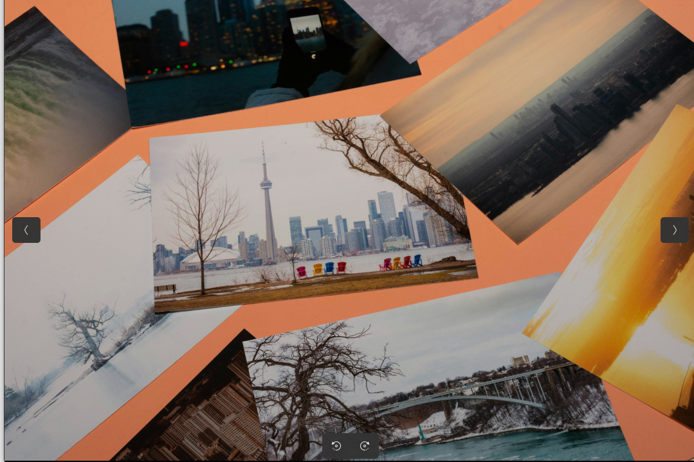

I had never gone for an adventure before in my life but that changed once I visited Fire Island and let's just say the experience was quite literally "fire". I was really afraid on that morning about many things like whether or not I would be safe and whether that new experience would be fun amongst other concerns. Looking back, that was and might remain to be one of the best experiences I have had in my life. Everything on that island was simply superb and breathtaking. From the lush green forests to the very rare varieties of wild animals, the island is just beautiful. I learnt how to start a fire and was able to identify different species of lizards. HOw could I forget the starry night views of the sky which was an absolutely free gift. I am now able to appreciate the nature that the earth has. Then came the day I had to leave for home. Indeed, what a sad day it was but I will go there once again in future.
Gallery: fire island
-
